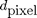
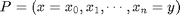
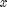
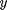
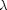
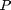
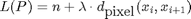
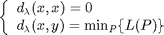

IM2AMOEBA - Amoeba-like front propagation over an image.
Contents
Description
Perform a (multiple) front propagation from a set of seed points using a metric derived from the input image over its domain.
Algorithm
Let  be a distance defined on the values of the image, for example a difference of gray-value, or a color distance. Let  a path between points  and . Let  be a real positive number. The length of the path  is defined as

The "amoeba distance" with parameter is thus defined as:

Syntax
D = IM2AMOEBA(I, start_pts); [D, Q] = IM2AMOEBA(I, start_pts, dfeat, dspace, lambda);
Inputs
I : input image of size (X,Y,C), possibly multichannel with C>1.
start_pts : array of size (2,k), where k is the number of starting points, ie. start_pts(:,i) are the coordinates of the i-th starting point.
dspace : (optional) string defining the distance over the spatial domain; it is either: 'l1', 'l2' or 'linf'; dspace: dspace='l2'.
dfeat : (optional) string defining the distance over the feature space (eg. a color distance); it is either: 'l1', 'l2' or 'linf'; default: dfeat='l2'.
lambda : (optional) real parameter used for weighting the relative influences of spatial domain and spectral range; default: lambda=1.
Outputs
D : distance map representing the propagated front from start_pts using the amoeba metric derived from the image.
Q : Voronoi-like (labelled) index map.
See also
Related: IM2FRONT, FMM, DIJSKTRA, POTENTIAL2FRONT. Called: IM2AMOEBA_BASE.
Function implementation
function [D, Q] = im2amoeba(I, start_pts, varargin)
parsing and checking parameters
error(nargchk(1, 16, nargin, 'struct')); error(nargoutchk(1, 4, nargout, 'struct')); % mandatory parameter if ~isnumeric(I) error('im2amoeba:inputerror','a matrix is required in input'); end p = createParser('IM2AMOEBA'); % create an instance of the inputParser class. % additional optional parameters p.addOptional('dfeat', 'l2', @(x) isa(x, 'function_handle') || ... (ischar(x) && any(strcmpi(x,{'l1','l2','linf'})))); p.addOptional('lambda', 1, @(x)isscalar(x) && x>=0); p.addOptional('dspace', 'l2', @(x) isa(x, 'function_handle') || ... (ischar(x) && any(strcmpi(x,{'l1','l2'})))); % parse and validate all input arguments p.parse(varargin{:}); p = getvarParser(p);
checking/setting variables
if ischar(p.dfeat) switch p.dfeat case 'l1' p.dfeat = @(c0, c1) sum(abs(c1-c0), 2); case 'l2' p.dfeat = @(c0, c1) sqrt(sum((c1-c0).^2, 2)); case 'linf' p.dfeat = @(c0, c1) max(c1-c0, [], 2); end end if ischar(p.dspace) switch p.dspace case 'l1' % Mahnattan (city-block) distance p.dspace = @(c0, c1) sum(abs(c1-c0), 2); case 'l2' p.dspace = @(c0, c1) sqrt(sum((c1-c0).^2, 2)); end end
main computation
[D, Q] = im2amoeba_base(I, start_pts, p.dfeat, p.lambda, p.dspace);
display
if p.disp figure; if isempty(ver('images')) subplot(1,3,1), imagesc(rescale(I)); subplot(1,3,2), imagesc(Q), colormap jet; else M = (imdilate(Q,ones(3,3))-Q==0); subplot(1,3,2), imagesc(label2rgb(Q.*M)), axis image off; M = cat(3,M,M,M); subplot(1,3,1), imagesc(rescale(I.*M)+(1-M)), axis image off; end subplot(1,3,2), hold on, plot(start_pts(1,:),start_pts(2,:),'*r'), hold off; subplot(1,3,3), imagesc(rescale(D)), colormap gray, axis image off; hold on, plot(start_pts(1,:),start_pts(2,:),'*r'), hold off suptitle('amoeba neighbourhoods') end
end % end of im2amoeba